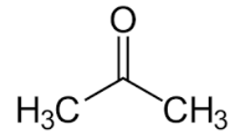

Compuși carbonilici
Structură și clasificare
Compușii ce conțin în structura lor gruparea funcțională carbonil sunt compuși carbonilici. Compușii carbonilici se împart în aldehide și cetone.
Aldehidele sunt compuși în care gruparea carbonic se leagă de un atom de H și de un radical organic, iar cetonele sunt compuși în care gruparea carbon se leagă de doi radicali organici.
Formule generale:
.png)
Aldehide
.png)
Cetone
Proprietăți fizice
Sunt compuși cu mirosuri caracteristice, plăcute sau neplăcute, spre exemplu formaldehida are un miros de formol, foarte neplăcut, în timp ce aldehida acetică miroase a mere verzi.
Sunt compuși care la temperatura camerei se pot găsi în toate stările de agregare. Aldehidele sunt lichide și solide, cu excepția formaldehidei (gaz), iar cetonele sunt lichide, cu excepția celor superioare care sunt solide.
Au puncte de topire și de fierbere ce cresc odată cu creșterea masei moleculare.
Odată cu creșterea masei moleculare, solubilitatea compușilor carbonilici scade, astfel compușii cu masa moleculară mica sunt solubili în apa, spre exemplu formaldehida, acetaldehida, acetona se dizolva în apă în orice proporție.
Sunt solubili în solvenți organici.
Proprietăți chimice
Reactivitatea
Aldehidele sunt mai reactive decât cetonele.
Reacții comune ale aldehidelor și cetonelor:
1. Reacția de adiție
- Reacția de hidrogenare (adiție hidrogen)
Prin reacția de hidrogenare a aldehidelor se formează alcooli primari.
Reacție generală: R-CH=O+H2 R-CH2-OH
R-CH2-OH
Exemplu: CH3-CH=O+ H2 CH3-CH2-OH
Prin reacția de hidrogenare a cetonelor se formează alcooli secundari.
Reacție generală:
.png)
Exemplu:
.png)
2. Reacția de condensare
Reacțiile de condensare sunt anumite reacții de adiție, de substituție sau de eliminare prin care două molecule (sau trei) organice formează o moleculă mai mare.
În general într-o recție de condensare un reactant va reacționa prin intermediul grupării carbonil, de aici denumirea de componentă carbonilică, în timp ce celălalt reactant va participa cu o altă grupare funcțională, precum „-CH”; „-CH2”; „-CH3”, având denumirea de componentă metilenică.
Reacțiile de condesare pot avea loc atât între o aldehidă și o cetonă, cât și între două aldehide sau două cetone.
Putem avea trei tipuri de reacții de condensare:
- Reacția de condensare aldolică
Este o reacție de adiție între componenta metilenică și componenta carbonilică, în urma căreia se formează un aldol sau un cetol.
Reacție generală:
.png)
- Reacția de condensare crotonică
Este o reacție cu eliminare de H2O între componenta cabonilică și cea metilenică, în urma căreia se formează un compus carbonilic α, β- nesaturat.
Reacție generală:
.png)
- Reacție de condensare trimoleculară:
Este o reacție de condensare ce are loc cu participarea a trei componente, fie o componentă carbonilică și două componente metilenice, fie o componentă metilenică și două componente carbonilice.
Reacție generală:

Reacția de oxidare
Reacția de oxidare este o reacție specifică aldehidelor.
- Oxidarea aldehidelor cu reactivul Fehling
Reacție generală: R-CH=O+Cu(OH)2R-COOH+Cu2O↓+H2O
*Oxidul de cupru este un precipitat roșu.
- Oxidarea aldehidelor cu reactivul Tollens
Reacție generală: R −CH = O + 2[Ag(NH3 ) 2 ]OH R −COOH+ 2Ag ↓ +4NH3 + H2O
*Oglinda de Ag este un precipitat negru.
Exemple și utilizări practice
Compuși monocarbonilici saturați:
- CH2=O metanal-aldehidă formică
Este un gaz cu efecte nocive asupra organismului. Se poate utiliza drept dezinfectant sub forma gazoasă sau sub forma de soluție apoasă, numindu-se formol, pentru conservarea preparatelor anatomice.
- CH3-CH2=O etanal-aldehidă acetică
Este utilizat pentru obtinerea altor compuși, precum acidul acetic.
-  propanona- acetona
Este un lichid incolor, prezintă un miros caracteristic. Se poate utiliza drept dizolvant, bun solvent și este utilizată pentru obținerea altor compuși.
.png) mentona
mentona
Este un compus ce confera mirosul uleiului de mentă.
.png) ianonă
ianonă
Este un compus ce conferă mirosul uleiului de violete.
.png) cuminol
cuminol
Este un compus ce se găsește în semințele de chimion.
Exerciții
1. Prin hidratarea unei alchine cu H2O, în prezență de Hg2+ și H2SO4 se obține un compus carbonilic cu raportul de masa C: H: O = 12:2:4.
Identificați compusul carbonilic obținut, alchina utilizată și scrieți ecuația reacției.
Rezolvare:
C: 12/12=1 ; 1/0,25=4
H: 2/1=2; 2/0,25=8
O: 4/16=0,25; 0,25/0,25=1
C4H8O- butanonă-compus carbonilic
C4H6-alchina
C4H6+H2O C4H8O
2. Calculați masa de formaldehidă de concentrație 37% care se poate obține din 112L de metan (în condiții normale), cu randament de 80%.
Rezolvare:
CH4+O2 CH2=O+H2O
ʋ= V/22,4= 112/22,4= 5 moli metan (cantitate practică)
ɳ= cp*100/ct
80= 5*100/ct
Ct= 6,25 moli metan
1 mol CH4………1 mol CH2O
6,25 moli CH4…….....X moli
X= 6,25 moli CH2O
6,25*30= 187,5 g CH2O
C%= md*100/ms
Ms= 187,5*100/37= 506,7 g CH2O